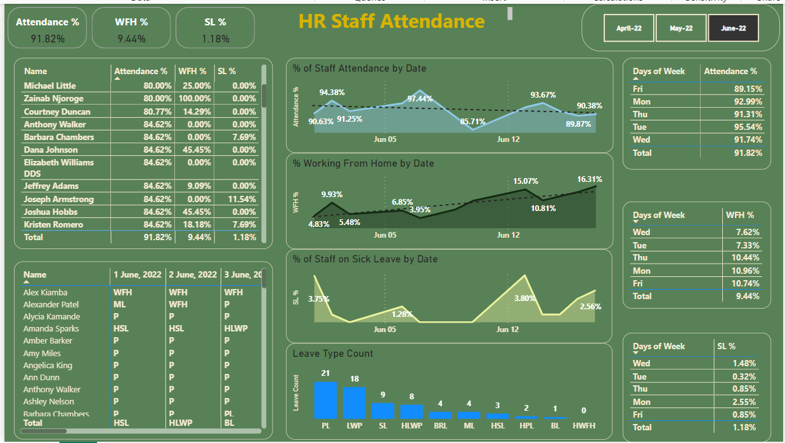

Objective:
Extract product data from Amazon for price monitoring, market analysis, and competitor research.
Approach:
Utilized Python and BeautifulSoup for web scraping.
Collected data on product names, prices, ratings, and availability.
Cleaned and stored the data for further analysis.
Outcome: Successfully scraped and structured data, which can be used for price tracking, trend analysis, and business intelligence.

Objective:
Conduct an in-depth analysis of the hotel industry to uncover trends in bookings, customer preferences, and seasonal patterns.
Approach:
Analyzed booking data to identify peak seasons and customer demographics.
Assessed factors influencing booking cancellations and customer satisfaction.
Provided insights to enhance revenue management and marketing strategies.
Outcome: Offered data-driven recommendations to improve occupancy rates and customer experience in the hotel industry.

Objective:
Analyze employee attendance to improve workforce planning and operational efficiency.
Approach:
Collected and processed attendance data, identifying trends in absenteeism.
Built an interactive Power BI dashboard for real-time tracking and insights.
Absenteeism Analysis: Identifies patterns and reasons for absences.
Workforce Planning: Aids in scheduling workshops and resource allocation.
Outcome: Enables data-driven HR decisions, improving attendance management and event planning.

Objective: Provide insights into sales, inventory, and customer trends for a bike store, as well as Airbnb listing performance and pricing strategies.
Bike Store Dashboard: Tracks revenue, top-selling products, and inventory levels to optimize restocking and marketing efforts.
Airbnb Analytics Dashboard: Analyzes pricing, occupancy rates, and seasonal trends to help hosts maximize revenue.
Outcome: Improved decision-making for businesses and property owners through data-driven insights.

Objective: Track and analyze lesson observations to improve teaching quality and learning outcomes.
Monitors teacher performance based on key evaluation metrics.
Identifies strengths and areas for improvement in lesson delivery.
Provides actionable insights for targeted training and professional development.
Outcome: Enhances teaching effectiveness through data-driven decision-making.

Objective: Analyze literacy fluency rates among students based on reading performance.
Categorization of Readers: Identifies students as Zero, Low, Emergent, or Fluent readers.
Performance Metrics: Displays average words per minute and total counts per category.
Filters: Allows users to drill down by learning area, grade, year, county, and other parameters.
Outcome: Helps education stakeholders track reading progress and implement targeted interventions to improve literacy.